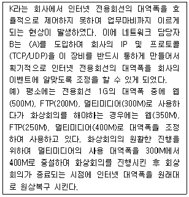
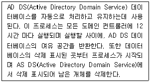
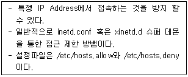
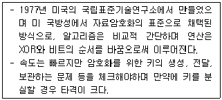

네트워크관리사-1급 (2018-04-08 기출문제)
1과목: TCP/IP
1. IPv6은 몇 비트의 Address 필드를 가지고 있는가?
- 32
- 64
- 128
- 256
(정답률: 83%)

2. IGMP 쿼리 메시지는 ( A )에서 ( B )로 보내지는 메시지이다. 빈칸에 해당하는 것은?
- A-호스트, B-호스트
- A-호스트, B-라우터
- A-라우터, B-호스트
- A-라우터, B-라우터
(정답률: 48%)
3. DNS에 관한 설명으로 옳지 않은 것은?
- DNS는 최상위에 루트 노드를 갖는 계층구조의 트리 형태를 갖추고 있으며 최대 128개의 계층(level)을 가질 수 있다.
- DNS에서 1차 서버 (Primary Server)는 자신의 권역(Zone)에 대한 정보의 생성, 관리, 업데이트를 맡고 있다.
- DNS 메시지에는 모두 쿼리(Query)와 응답(Response)의 두 가지 종류가 있다.
- DNS에서는 하위 계층 프로토콜로써 UDP만 사용한다.
(정답률: 82%)
4. 네트워크 ID '210.182.73.0'을 6개의 서브넷으로 나누고, 각 서브넷 마다 적어도 30개 이상의 Host ID를 필요로 한다. 적절한 서브넷 마스크 값은?
- 255.255.255.224
- 255.255.255.192
- 255.255.255.128
- 255.255.255.0
(정답률: 64%)
5. TCP/IP 망을 기반으로 하는 다양한 호스트간 네트워크 상태 정보를 전달하여 네트워크를 관리하는 표준 프로토콜은?
- FTP
- ICMP
- SNMP
- SMTP
(정답률: 65%)
6. TCP 프로토콜에 대한 설명으로 옳지 않은 것은?
- 두 호스트 사이에 믿을 수 있는 연결 지향적인 전송을 제공한다.
- 송수신되는 데이터의 흐름을 감시하고 에러를 제어한다.
- 신뢰성 있는 데이터 전송을 보장한다.
- TCP는 UDP보다 더 빨리 정보를 전송한다.
(정답률: 76%)
7. ARP의 기능에 대한 설명 중 옳지 않은 것은?
- 모든 호스트가 성공적으로 통신하기 위해서 각 하드웨어의 물리적인 주소문제를 해결하기 위해 사용된다.
- 목적지 호스트의 IP Address를 MAC Address로 바꾸는 역할을 하며, 목적지 호스트가 시작지의 IP Address를 MAC Address로 바꾸는 것을 보장한다.
- 기본적으로 ARP 캐시(Cache)를 사용하지 않으며, 매번 서버와 통신할 때 마다 MAC Address를 요구한다.
- ARP 캐시(Cache)는 MAC Address와 IP Address의 리스트를 저장한다.
(정답률: 74%)
8. 브로드캐스트(Broadcast)에 대한 설명 중 올바른 것은?
- 어떤 특정 네트워크에 속한 모든 노드에 대하여 데이터 수신을 지시할 때 사용한다.
- 단일 호스트에 할당이 가능하다.
- 서브네트워크로 분할할 때 이용된다.
- 호스트의 Bit가 전부 '0'일 경우이다.
(정답률: 74%)
9. SSH 프로토콜은 외부의 어떤 공격을 막기 위해 개발 되었는가?
- Sniffing
- DoS
- Buffer Overflow
- Trojan Horse
(정답률: 66%)
10. ICMP에 대한 설명 중 올바른 것은?
- IP에서의 오류(Error) 제어를 위하여 사용되며, 시작지 호스트의 라우팅 실패를 보고한다.
- TCP/IP 프로토콜에서 데이터의 전송 서비스를 규정한다.
- TCP/IP 프로토콜의 IP에서 접속없이 데이터의 전송을 수행하는 기능을 규정한다.
- 네트워크의 구성원에 패킷을 보내기 위한 하드웨어 주소를 정한다.
(정답률: 59%)
11. TFTP에 대한 설명으로 올바른 것은?
- TCP/IP 프로토콜에서 데이터의 전송 서비스를 규정한다.
- 인터넷상에서 전자우편(E-mail)의 전송을 규정한다.
- UDP 프로토콜을 사용하여 두 호스트 사이에 파일 전송을 가능하게 해준다.
- 네트워크의 구성원에 패킷을 보내기 위한 하드웨어 주소를 정한다.
(정답률: 64%)
12. TCP 헤더 포맷에 대한 설명으로 옳지 않은 것은?
- Checksum은 1의 보수라 불리는 수학적 기법을 사용하여 계산된다.
- Source 포트 32bit 필드는 TCP 연결을 위해 지역 호스트가 사용하는 TCP 포트를 포함한다.
- Sequence Number 32bit 필드는 세그먼트들이 수신지 호스트에서 재구성되어야 할 순서를 가리킨다.
- Data Offset 4bit 필드는 32bit 워드에서 TCP 헤더의 크기를 가리킨다.
(정답률: 45%)
13. 멀티캐스트 라우터에서 멀티캐스트 그룹을 유지할 수 있도록 메시지를 관리하는 프로토콜은?
- ARP
- ICMP
- IGMP
- FTP
(정답률: 78%)
14. IP 패킷의 구조에서 헤더 부분에 들어가는 항목으로 옳지 않은 것은?
- Version
- Total Length
- TTL(Time to Live)
- Data
(정답률: 63%)
15. RIP에 대한 설명으로 옳지 않은 것은?
- 독립적인 네트워크 내에서 라우팅 정보 관리를 위해 광범위하게 사용된 프로토콜이다.
- 자신이 속해 있는 네트워크에 매 30초마다 라우팅 정보를 브로드캐스팅(Broadcasting) 한다.
- 네트워크 거리를 결정하는 방법으로 홉의 총계를 사용한다.
- 대규모 네트워크에서 최적의 해결방안이다.
(정답률: 63%)
16. 라우터는 자신을 네트워크의 중심점으로 간주하여 최단 경로의 트리를 구성하는 방식으로, 사용자에 의한 경로의 지정, 가장 경제적인 경로의 지정, 복수경로 선정 등의 기능을 제공하는 라우팅 프로토콜은?
- OSPF(Open Shortest Path First)
- IGRP(Interior Gateway Routing Protocol)
- RIP(Routing Information Protocol)
- BGP(Border Gateway Protocol)
(정답률: 73%)
2과목: 네트워크 일반
17. IP Address 중 Class가 다른 주소는?
- 191.234.149.32
- 198.236.115.33
- 222.236.138.34
- 195.236.126.35
(정답률: 70%)
18. 네트워크 액세스 방법에 속하지 않는 것은?
- CSMA/CA
- CSMA/CD
- POSIX
- Token Pass
(정답률: 71%)
19. 전송한 프레임의 순서에 관계없이 단지 손실된 프레임만을 재전송하는 방식은?
- Selective-repeat ARQ
- Stop-and-wait ARQ
- Go-back-N ARQ
- Adaptive ARQ
(정답률: 70%)
20. 버스형 토폴로지의 단점에 해당되는 것은?
- 비교적 설치가 용이하다.
- 경제적이다.
- 네트워크의 트래픽이 많아 버스를 느리게 할 수 있다.
- 간단하고 규모가 작은 경우에도 설치가 용이하다.
(정답률: 73%)
21. PCM 변조 과정에 해당 되지 않는 것은?
- 세분화
- 표본화
- 양자화
- 부호화
(정답률: 74%)
22. 흐름제어, 오류제어, 접근제어, 주소 지정을 담당하는 계층은?
- 네트워크 계층
- 데이터링크 계층
- 물리 계층
- 전송 계층
(정답률: 56%)
23. 무선 LAN에 관한 IEEE표준은?
- IEEE 802.8
- IEEE 802.9
- IEEE 802.10
- IEEE 802.11
(정답률: 80%)
24. 프로토콜의 기본적인 기능 중에서 수신측에서 데이터 전송량이나 전송 속도 등을 조절하는 기능은?
- Flow Control
- Error Control
- Sequence Control
- Connection Control
(정답률: 75%)
25. 여러 개의 타임 슬롯(Time Slot)으로 하나의 프레임이 구성되며 각 타임 슬롯에 채널을 할당하여 다중화하는 것은?
- TDMA
- CDMA
- FDMA
- CSMA
(정답률: 65%)
26. 에러 검출(Error Detection)과 에러 정정(Error Correction)기능을 모두 포함하는 기법으로 옳지 않은 것은?
- 검사합(Checksum)
- 단일 비트 에러 정정(Single Bit Error Correction)
- 해밍코드(Hamming Code)
- 상승코드(Convolutional Code)
(정답률: 51%)
27. (A) 안에 맞는 용어로 옳은 것은?

- QoS (Quality of Service)
- F/W (Fire Wall)
- IPS (Intrusion Prevention System)
- IDS ( Intrusion Detection System)
(정답률: 68%)
3과목: NOS
28. DNS가 URL 'icqa.or.kr'을 IP Address '211.111.144.240'으로 서비스하고 있을 때 DNS 설정 항목을 수정하여 'test.icqa.or.kr'로 외부에 서비스할 수 있는 가장 적절한 방법은?
- DNS MX 레코드를 추가한다.
- DNS A 레코드를 추가한다.
- DNS REVERSE 영역을 추가한다.
- 서비스 할 수 없다.
(정답률: 67%)
29. Linux에서 네임서버의 동작 확인 및 운영관리를 위하여 널리 사용되는 명령어는?
- nslookup
- netstat
- ping
- traceroute
(정답률: 55%)
30. Windows Server 2008 R2에서 DHCP 서버 구성 시 옳은 것은?
- 특정 호스트에게 항상 같은 IP 주소를 부여하려면 그 호스트의 이름이 필요하다.
- 특정 호스트에게 IP 주소 부여를 허가하거나 거부하려면 해당 호스트의 MAC 주소가 필요하다.
- 클라이언트가 도메인 이름 조회를 할 수 있게 하려면 WINS 서버를 지정한다.
- DHCPv6 클라이언트가 DHCP 서버로부터 IPv6 주소를 얻기 원한다면 상태 비저장 모드를 사용한다.
(정답률: 53%)
31. 리눅스 시스템에서 마운트 되었는지 확인 사용하는 명령어로 옳지 않은 것은?
- fdisk
- mount
- df
- cat /etc/mtab
(정답률: 45%)
32. Windows Server 2008 R2의 VPN Server의 클라이언트를 인증하는 방법이다. 다음 설명 중 옳지 않은 것은?
- 컴퓨터 상태 검사만 수행 - 특정한 컴퓨터만 접속 가능하게 한다.
- 암호화 안 된 인증(PAP, SPAP) - 인증을 단순 문자열로 주고받는다. 프로토콜 분석기로 패킷을 가로채서 자격증명을 읽을 수 있다.
- 암호화인증 (CHAP) - 암호화된 인증 프로토콜로 최초로 사용되었다. 정기적으로 새로운 NONCE를 클라이언트에 보내 이 세션에서 새로운 연결을 한다.
- Microsoft 스마트 카드 또는 기타 인증서 - 인증서를 발급하고 스마트 카드를 사용자가 가짐으로써 다단계 인증을 제공 할 수 있다.
(정답률: 52%)
33. 다음은 Windows Server 2008 R2의 액티브 디렉터리 도메인서비스 데이터베이스 관리에 대한 내용이다. 다음에서 설명하는 기능은?

- 온라인 조각모음
- 가비지 컬렉션
- AD DS 다시시작
- 오프라인 조각모음
(정답률: 47%)
34. Windows Server 2008 R2의 파일 암호화에 관한 설명으로 옳지 않은 것은?
- NTFS 파일 시스템만 암호화가 가능하다.
- 암호화된 파일은 한 사람만 사용이 가능하다.
- 일반 백업 절차에 의해 암호화된 파일을 백업하면 복구 시에 복호화 된다.
- 폴더를 암호화 했을 때, 폴더 내 생성된 모든 파일은 그 시점에 암호화 된다.
(정답률: 44%)
35. Windows Server 2008 R2의 백업에 관한 설명으로 옳지 않은 것은?
- 완전 서버 백업(bare-metal backup)이 가능하다.
- 다른 하드웨어에 서버를 복구 할 수 있다.
- 자기 테이프 백업을 지원한다.
- 네트워크 공유나 로컬하드드라이브의 백업을 지원한다.
(정답률: 58%)
36. 불필요한 브로드캐스트 트래픽을 차단하고, 네트워크의 보안성강화를 위하여 대부분의 스위치에서 필수적으로 사용하는 것은?
- VLAN
- Spanning-Tree Protocol
- Trunk
- VTP
(정답률: 52%)
37. Linux 시스템 부팅과 함께 자동으로 마운트 되어야 할 항목과 옵션이 정의되어 있는 파일은?
- /etc/fstab
- /usr/local
- /mount/cdrom
- /home/public_html
(정답률: 64%)
38. Windows Server 2008 R2의 'netstat' 명령 중 라우팅 테이블을 확인 할 수 있는 명령 옵션은?
- netstat –a
- netstat -r
- netstat –n
- netstat -s
(정답률: 52%)
39. Windows Server 2008 R2에서 SID(Security Identifier)에 대한 설명으로 옳지 않은 것은?
- 윈도우의 각 사용자나 그룹에 부여되는 고유한 식별번호이다.
- 사용자가 로그인을 수행하면 접근 토큰(엑세스 토큰)이 생성되고, 해당 토큰에는 로그인한 사용자와 그 사용자가 속한 모든 작업 그룹들에 관한 SID 정보가 담겨진다.
- 접근 토큰의 사본은 그 사용자에 의해 시작된 모든 프로세스에게 할당된다.
- 사용자 계정 및 패스워드 정보를 담고 있는 passwd 파일에 SID 정보가 저장된다.
(정답률: 38%)
40. Windows Server 2008 R2의 보안 이벤트 감사에 관한 설명으로 옳지 않은 것은?
- 권한 사용 이벤트는 사용자 권한이 작업을 수행하는데 사용될 때 감사한다.
- 프로세스 추적은 응용프로그램이 추적되고 있는 동작을 할 때 감사한다.
- 시스템 이벤트는 컴퓨터가 재시작되거나 보안에 영향을 주는 기타 이벤트가 발생할 때 감사한다.
- 디렉토리 서비스 이벤트는 디렉토리 서비스 이벤트의 사용여부 경우만 감사한다.
(정답률: 44%)
41. Windows Server 2008 R2의 Hyper-V에서 운영체제를 설치 운영하다가 특정 프로그램을 잘못 설치하거나 삭제하여 시스템에 문제가 생기는 경우가 있다. 이때 운영체제를 성공적으로 설치한 시점으로 되돌리기 위하여 중요한 시점을 저장하는 것을 무엇이라고 하는가?
- 스냅샷(snapshot)
- 가상 머신
- 가상 소프트웨어
- 가상 하드디스크
(정답률: 67%)
42. Windows Server 2008 R2에서 세분화된 암호정책을 지원한다. 암호설정개체(PSO)를 만들 수 있는 사용자는?
- 일반 사용자
- 로컬 관리자
- 도메인 관리자
- Guests
(정답률: 47%)
43. Windows Server 2008 R2에서 FTP 사이트 구성시 SSL을 적용함으로써 얻어지는 것은?
- 전송속도 증대
- 사용자 편의 향상
- 동시 접속 사용자 수 증가
- 보안 강화
(정답률: 73%)
44. 컴퓨터가 부팅 될 수 있도록 Linux 운영체제의 핵이 되는 커널을 주 기억 장소로 상주시키는데 사용되는 부트 로더는?
- GRUB
- MBR
- CMOS
- SWAP
(정답률: 48%)
45. 대화형 프롬프트와 독립적으로 또는 조합해 사용 가능한 스크립팅 환경을 포함하는 새로운 Windows 명령줄 도구는?
- PowerShell
- Server Core
- Active Directory
- Terminal Services Gateway
(정답률: 59%)
4과목: 네트워크 운용기기
46. OSI 참조모델의 물리계층에서 작동하는 네트워크 장치는?
- Gateway
- Bridge
- Router
- Repeater
(정답률: 74%)
47. RAID에 대한 설명이 옳지 않은 것은?
- RAID level 2 : 어레이 안의 모든 드라이브에 비트 수준으로 자료 나누기를 제공한다. 추가 드라이브는 해밍 코드를 저장한다. 미러링된 드라이브는 필요없다.
- RAID level 3 : 기본적으로 RAID 1+2이다. 이는 다수의 RAID 1 한 쌍에 걸쳐 적용된 것이다. 패리티 정보는 생성되고 단일 패리티 디스크에 작성된다.
- RAID level 4 : 데이터가 비트나 바이트보다는 디스크 섹터 단위로 나뉘어 지는 것만 제외하면 RAID level 3과 비슷하다. 패리티 정보도 생성된다.
- RAID level 5 : 데이터는 드라이브 어레이의 모든 드라이브에 디스크 섹터 단위로 작성된다. 에러-수정 코드도 모든 드라이브에 작성된다.
(정답률: 44%)
48. 스위치 허브(Switch Hub)에 대한 설명 중 옳지 않은 것은?
- 네트워크 관리가 용이하다.
- 네트워크 확장이 용이하다.
- 포트 당 일정한 속도를 보장해 준다.
- 스위치 허브에 연결된 사용자가 많을수록 전송속도는 향상된다.
(정답률: 74%)
49. 라우터에서 'show running-config' 란 명령어로 내용을 확인할 수 있는 곳은?
- ROM
- RAM
- NVRAM
- FLASH
(정답률: 45%)
50. IPv4가 고갈됨에 따라 내부 네트워크의 사설IP 및 보안강화를 위해 네트워크를 분리하는 방법으로 내부에는 사설IP 대역을 사용하고 외부 네트워크에는 공인 IP를 사용하도록 하는 IP Address 변환 방식은?
- IPv6 방식
- DHCP 방식
- Mac Address 방식
- NAT 방식
(정답률: 59%)
5과목: 정보보호개론
51. Apache 웹 서버 로그에서 확인 할 수 없는 정보는?
- 클라이언트의 IP Address
- 클라이언트의 요청 페이지
- 클라이언트의 접속 시도 날짜
- 클라이언트의 게시판 입력 내용
(정답률: 69%)
52. 시스템의 침투 형태 중 네트워크의 한 호스트에서 실행되어 다른 호스트들의 패킷 교환을 엿듣는 해킹 유형은?
- Sniffing
- IP Spoofing
- Domain Spoofing
- Repudiation
(정답률: 66%)
53. Linux 시스템에서 아래 내용이 설명하는 것은?

- TCP_Wrapper
- PAM
- SATAN
- ISSm
(정답률: 65%)
54. 다음 중 암호기술 서비스로 옳지 않은 것은?
- 기밀성
- 분별성
- 부인봉쇄
- 인증
(정답률: 50%)
55. 다음은 TCP 프로토콜에서 사용되는 플래그에 대한 설명이다. 옳지 않은 것은?
- SYN(Synscronization) : 초기 TCP 연결 요청
- FIN(Finish) : TCP 연결을 즉시 종료
- PSH(Push) : 수신측에 가능한 빨리 데이터를 전달
- URG(Urgent) : 인터럽트
(정답률: 46%)
56. S/MIME에 대한 설명으로 옳지 않은 것은?
- 전자우편 보안 서비스로, HTTP에서는 사용이 불가능하다.
- X.509 형태의 S/MIME 인증서를 발행하여 사용한다.
- 전자 서명과 암호화를 동시에 사용할 수 있다.
- 대칭키 암호 알고리즘을 사용하여 전자우편을 암호화 한다.
(정답률: 47%)
57. 다음에서 설명하는 암호화 기술은?

- RSA
- 디지털 서명
- IDEA
- DES
(정답률: 41%)
58. 'Brute Force' 공격에 대한 설명으로 올바른 것은?
- 암호문을 풀기 위해 모든 가능한 암호 키 조합을 적용해 보는 시도이다.
- 대량의 트래픽을 유발해 네트워크 대역폭을 점유하는 형태의 공격이다.
- 네트워크상의 패킷을 가로채 내용을 분석해 정보를 알아내는 행위이다.
- 공개 소프트웨어를 통해 다른 사람의 컴퓨터에 침입하여 개인정보를 빼내는 행위이다
(정답률: 52%)
59. Linux 커널에서 기본으로 제공하는 넷필터(Net Filter)를 이용하여 방화벽을 구성할 수 있는 패킷 제어 프로그램은?
- iptables
- nmap
- fcheck
- chkrootkit
(정답률: 49%)
60. Linux의 서비스 포트 설정과 관련된 것은?
- /etc/services
- /etc/pam.d
- /etc/rc5.d
- /etc/service.conf
(정답률: 50%)